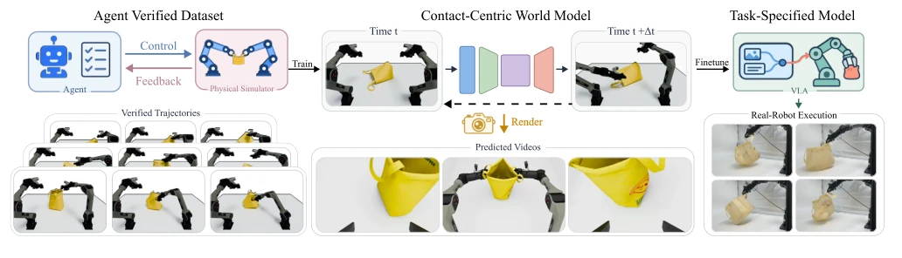
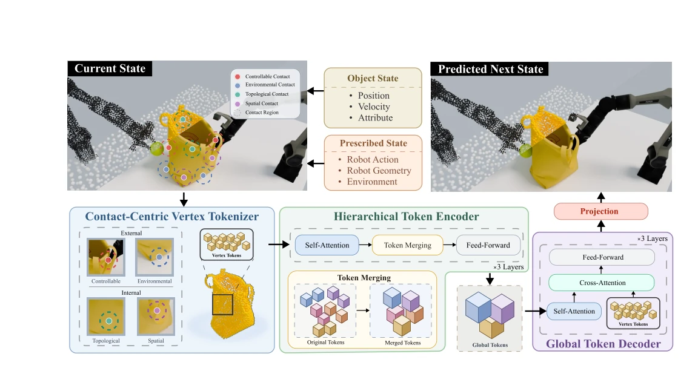
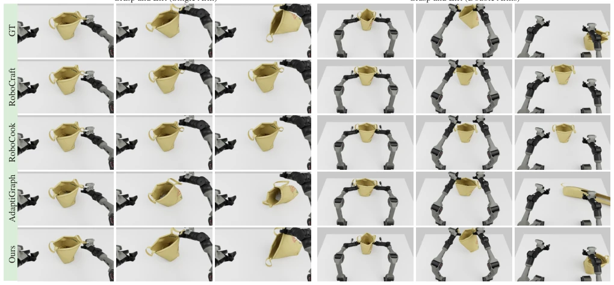
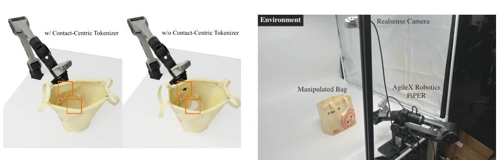
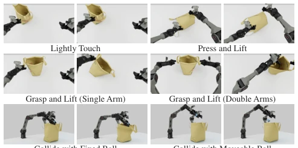

这篇论文给机器人学习搞了个“加速包”，WorldContact 号称能省时间还能提效果。10 倍速度提升听着很爽，毕竟仿真太慢是硬伤。但仔细一看，它还是得靠高质量的源数据“喂饭”，本质上是个数据生成器，而不是真正的物理引擎。虽然 bag lifting 成功率从 65% 干到 95%，但这 25 条源数据要是收集不好，模型照样废。而且它依赖 calibrated assets，真要是换个新物体，这“接触中心”还能不能 hold 住？毕竟现实世界没有完美的数字孪生。不过能在 H100 上跑这么快，对于需要大量试错的策略微调来说，确实是个不错的“炼丹炉”，只是泛化性还得看后续验证。
This paper provides an "acceleration pack" for robot learning, with WorldContact claiming to save time and improve performance. A 10x speedup sounds great, given that simulation slowness is a hard flaw. But upon closer inspection, it still relies on high-quality source data for "feeding", essentially being a data generator rather than a true physics engine. Although bag lifting success rate went from 65% to 95%, if these 25 source data points aren't collected well, the model is still useless. Moreover, it relies on calibrated assets; if switching to a new object, can this "contact center" still hold? After all, the real world has no perfect digital twin. However, running this fast on H100 is indeed a good "alchemy furnace" for strategy fine-tuning requiring massive trial and error, just that generalization still depends on subsequent verification.
The core difficulty of Embodied AI lies in enabling robots to adapt to new objects and tasks, but this requires massive interaction experience, making collection costs too high. Existing world models (e.g., Dreamer [4]) mostly predict in latent space, lacking material points or boundary geometry information, making it hard to handle complex contacts of deformable objects. Although some works like VisuoSpatial Foresight [9] or IRASim [10] attempted prediction, they often do not directly provide the geometric correspondence required for vertex error or penetration metrics. For deformable objects, DPI-Net [12] or GraphNets [13] can model particles but lack explicit encoding of contact relationships. WorldParticle [8] uses Lagrangian methods, but WorldContact further emphasizes "contact centers", attempting to solve dynamic prediction difficulties for deformable objects during friction, sliding, and grasping. Existing simulators have time steps that are too small, leading to slow data generation, while directly learning dynamic models with large time steps can significantly accelerate data generation required for strategy fine-tuning.

Fig. 1. WorldContact overview. (Left): an agent-verified physical-simulation dataset, where an automated simulation agent samples the object and prescribed state and executes the resulting controls in the physical simulator. (Middle): contact-centric world model prediction and rendering of object-state trajectories into the observation modality consumed by the VLA. (Right): VLA fine-tuning for task-specific policy adaptation and subsequent real-robot deployment.
The overall process is divided into state prediction and data generation. First, the model divides the scene into object states (vertex position/velocity/topology) and preset states (robot actions/environment geometry). The core innovation lies in the Contact Center Vertex Tokenizer, which encodes four types of contact information: spatial contact (between objects/parts), topological contact (proximity in UV space of the same object), controllable contact (manipulator/gripper), and environmental contact (tabletop, etc.). These features are aggregated into vertex Tokens via kernel functions. Next is the Hierarchical Token Encoder, which utilizes self-attention mechanisms to merge Tokens to capture long-range coupling (e.g., cloth stretching), reducing computational load. The Global Token Decoder feeds global information back to vertices via cross-attention to predict state correction amounts. Finally, Differentiable Topology Projection is used during training to smooth the predicted displacement field and limit topology edge distortion, improving long-horizon rollout stability. During data generation, the model predicts states at 20x the source simulator's time step, renders them, pairs with actions, and augments the VLA fine-tuning dataset. The loss function minimizes position and velocity errors, with gradients propagated via rollout. Additionally, the model adopts a hierarchical token merging strategy, merging vertex Tokens into Global Tokens for global communication, then decoding back to vertex resolution, effectively balancing computational efficiency and long-range dependency modeling capability.

Fig. 2. WorldContact pipeline. Given the current object state and prescribed state, WorldContact proceeds through four stages: the contact-centric vertex tokenizer encodes spatial, topological, controllable, and environmental contact information into vertex tokens; the hierarchical encoder merges vertex tokens into global tokens for long-range communication; and the global-token decoder refines vertex tokens to produce vertex-level state corrections. A differentiable projection is used to improve long-horizon rollout stability during fine-tuning.
Experiments were conducted on 16 shopping bag manipulation tasks, including grasping, lifting, placing, etc. Data sources come from SimWeaver [7] physics simulation, verified by automated Agents. Comparison baselines include RoboCraft [18], RoboCook [19], and AdaptiGraph [20]. Metrics cover vertex position/velocity MSE and penetration rate. WorldContact significantly outperforms baselines in MSE and penetration rate (penetration rate only 0.35%). In terms of computational efficiency, generating state rollout speed on a single H100 card is 10x faster than the source simulator. Ablation experiments prove the Contact Tokenizer is crucial for preventing penetration, and hierarchical compression reduces training time. Finally deployed on real robots, using VLA strategy fine-tuning; with only 25 source data points success rate was 65%, increased to 95% after expanding to 150, validating the effectiveness of data generation for strategy adaptation.

Fig. 4. Qualitative rollout comparison. The top row shows the ground-truth states, while the subsequent rows show rollouts from RoboCraft [18], RoboCook [19], AdaptiGraph [20], and Ours. Columns correspond to successive time steps. RoboCraft [18] and RoboCook [19] fail to maintain the bag–gripper contact during the lifting process, causing the bag to remain stationary. AdaptiGraph suffers from severe physically implausible deformation. In contrast, our method successfully simulates the lifting process while maintaining stable rollouts. The rendered views on the left are consistent with those used for VLA fine-tuning.

Fig. 5. Ablation of the contact-centric vertex tokenizer. Same state with (left) and without (right) the contact-centric vertex tokenizer. Orange boxes highlight the corresponding contact regions, where removing our tokenizer leads to penetration.
其他图片Other Figures

Fig. 3. Action and contact diversity in the collected corpus. Each panel shows a representative shopping-bag task, including object collision, grasping, lifting, placing, and releasing, covering complex contacts.